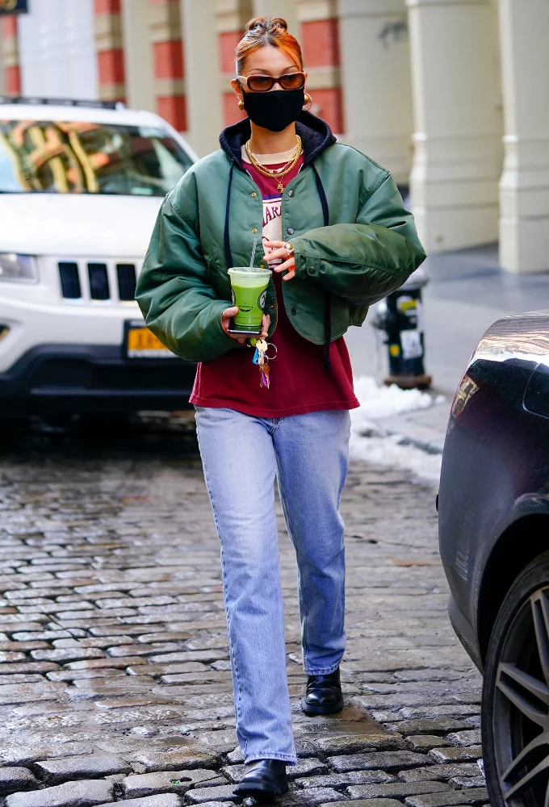
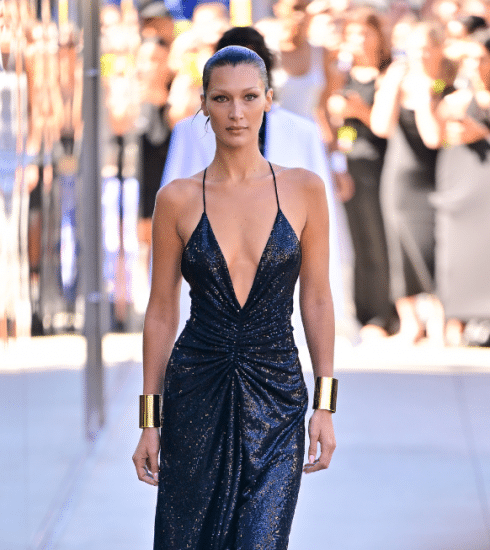

Qui est-elle ?
Bella Hadid est née le 9 octobre 1996 à Los Angeles. Fille de Mohammed Hadid et de Yolanda Foster,
elle a une soeur aînée Gigi (née en 1995) et un frère cadet Anwar (né en 1999).
Elle a 4 ans lorsque ses parents divorcent. Sa mère se remarie par la suite avec David Foster, producteur de musique canadien.
Elle grandit sous le soleil californien,
et suit les traces de sa maman, ancien mannequin reconvertie en personnalité de la télé-réalité
Sa Carrière
Son style de mode


Présente à toutes les fashion week, le top enchaîne les campagnes de publicité, les couvertures des magazines et les apparitions aux soirées les plus branchées.
It-girl, mannequin international et influenceuse de la mode, Bella est devenue une vraie star. Au point qu’on la voit absolument partout.
C’est d’ailleurs pour cette (bonne) raison qu’on s’inspire de son sens de la mode et qu’on lui pique toutes ses pièces indispensables.
Au quotidien, Bella Hadid cultive un style très street. Tout en restant très sexy, elle sait mixer des pièces sportwear, comme un bomber, un maxi pull oversize ou des baskets avec des vêtements bien plus féminins : un cropped-top, une robe moulante ou une mini-jupe en jean.
Pour les accessoires, Bella agrémente ses tenues de sacs ou de chaussures tendance pour être toujours au top.
Et même en sweat XXL, Bella sait se mettre en valeur. Son secret ? Elle mise tout sur ses atouts : ses grandes jambes, sa taille fine, etc.
Du coup, on copie : un short avec une paire de sneakers, un jean slim avec une grosse doudoune ou un petit top avec un ensemble jogging.
Avec ça, on est certaine d’avoir tout bon et d’être au max de notre street cred !
Pourquoi est-elle tant aimée par son public ?
Cette omniprésence, associée à son impeccable sens du style,
a conduit plus de 52 millions de personnes à la suivre sur Instagram, soit plus de trois fois le nombre d’habitants du pays d’origine de sa mère,
Yolanda, ancien top model néerlandais.
Cette simplicité et cette promptitude à la conversation ne sont pas nécessairement ce à quoi on pourrait s’attendre de la part du top model le plus stratosphérique de notre génération.
Mais c’est que sa carrière a pris un tournant inattendu : alors que son pouvoir irradie un peu plus jour après jour, et avec lui le feu des projecteurs sous lesquels ses moindres faits et gestes sont examinés,
elle a choisi d’éviter le masque d’impassibilité et de contrôle qui maquille souvent les visages de la mode et a plutôt opté pour la sincérité — à propos de ses luttes concernant la représentation du corps,
de la santé mentale, et de la réticence de l’industrie à reconnaître son héritage palestinien.